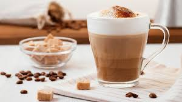
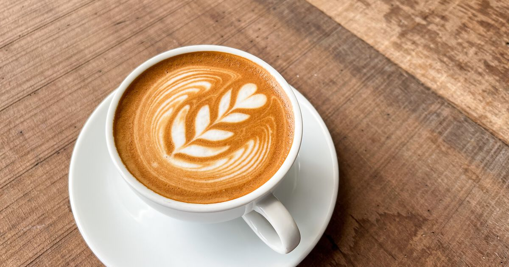

Capuchino
Un café cremoso con espuma de leche y un sabor intenso.

Latte
Un café suave con una gran cantidad de leche vaporizada.

Café Negro
Un café puro y fuerte, ideal para los amantes del sabor intenso.
Espresso
Un café concentrado, servido en porciones pequeñas pero potentes.

Macchiato
Un espresso con un toque de leche espumada.

Mocha
Una deliciosa mezcla de café, chocolate y leche.

Ristretto
Una versión más concentrada del espresso, con sabor más intenso.

Americano
Espresso con agua caliente, más suave pero lleno de sabor.
Cold Brew
Un café frío preparado lentamente para obtener un sabor suave.